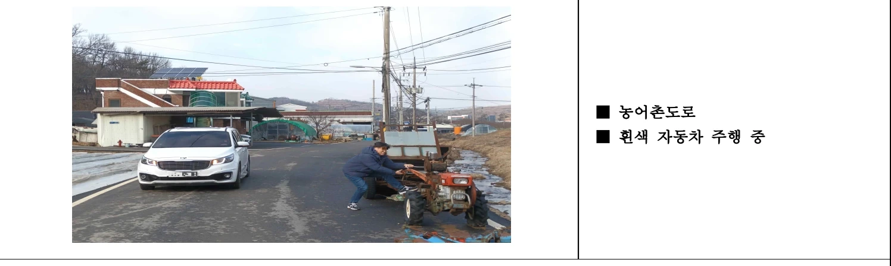

775. 在下列情况下，最安全的两种驾驶方法是？

- ①农渔村道路没有限速规定，因此加速行驶。
- ②即使轿车和农业机械之间有通行空间也应停车等待，以确保耕耘机驾驶人的安全。
- ③在驶近农业机械前停车让行或减速，以与农业机械保持安全距离。
- ④绝对不能鸣笛，以免妨碍农业机械驾驶人。
- ⑤道路左右侧路边区域禁止临时停车但允许长时间停车，因此可以在这里长时间停车。
查看答案
答案
② 即使轿车和农业机械之间有通行空间也应停车等待，以确保耕耘机驾驶人的安全。
③ 在驶近农业机械前停车让行或减速，以与农业机械保持安全距离。
依据
农村道路也被视为《道路交通法》规定的道路（《道路交通法》第 2 条第 1 款 C）。即使没有限速标志，一般道路的最高速度也为每小时60公里（道路交通法施行细则第十九条第一项第一项乙项）。由于农机在操作农机时噪音较大，必要时可以使用喇叭来引起农机操作者的注意。
依据文字为学习用机器翻译。